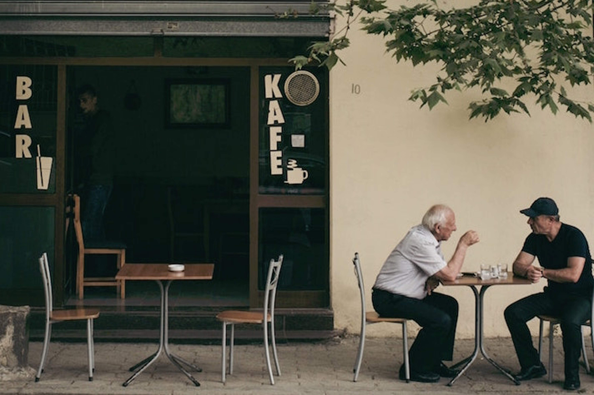
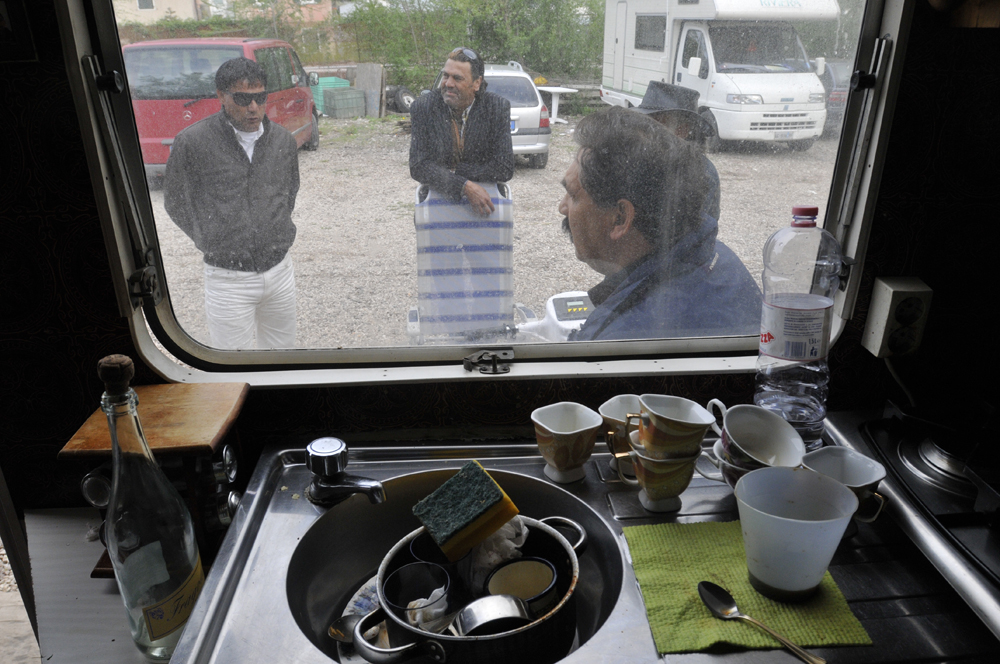

Frenesie d'Oriente
Spesso la nostra visione eurocentrica del mondo ci porta a pensare alle nostre città come più organizzate, grandi e funzionali rispetto a quelle orientali, ma è davvero così?

Affinità comunicativa
La differenza di età, il background culturale limitano una vera e profonda comunicazione o è possibile costruire un rapporto significativo anche quando ci sono questi fattori?

Da uomo a uomo
Fin da piccoli abbiamo sentito parlare degli zingari come persone pericolose, dalle quale tenersi alla larga senza sapere bene perché; ma ci siamo mai chiesti cosa pensano loro di noi GAGI?